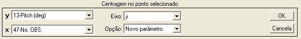
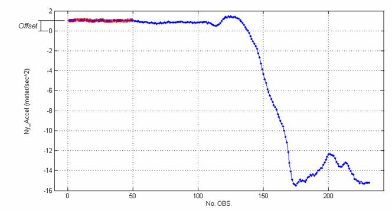
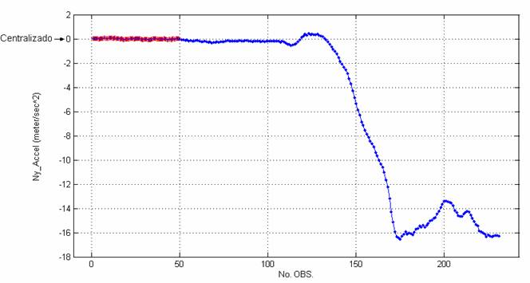

| Menu
Funções |
|
Centrar
no Ponto Selecionado
Essa função
permite remover um offset
do parâmetro y ou x de
forma que o ponto selecionado (ou a média dos pontos selecionados)
fique na
posição zero.
Clique no menu
“Funções ► Centrar no ponto
selecionado”.
A Caixa de
Diálogo solicitará que o usuário indique os
parâmetros para a alteração:

● Nos campos “x” ou "y", indique o parâmetro que deseja alterar.
● No campo
“Eixo”, indique em que eixo será realizada
a correção (y ou x).
● No campo
“Opção”, indique se deseja criar um novo
parâmetro ou substituir o atual com os dados modificados.
Ao clicar “OK”,
o usuário deverá fornecer o nome do novo
parâmetro ou confirmar a substituição do parâmetro original, dependendo
da
seleção do campo “Opção”.


No primeiro
caso, após definir o nome e pressionar “OK”, o
novo parâmetro com intervalo alterado será acrescentado à penúltima
posição das
matrizes de trabalho (antes de “No.OBS.”).
No segundo
caso, ao clicar “Sim” o parâmetro será atualizado.
Lógica da
Operação
A função obterá
o valor médio dos pontos selecionados e
subtrairá esse offset no eixo desejado:
Valores
originais:

Valores
corrigidos:

| |
Alterar
intervalo circular |
Operações
matemáticas |
|